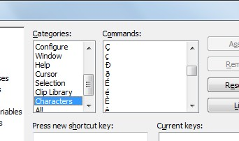
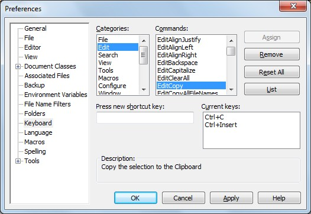

[BACK]
TextPad-bootstraps are what make it possible for XBN-PhraseExpress and TextPad to communicate.
Specifically, a "TextPad-bootstrap" (or "tp-bootstrap", or "tpbs") is a TextPad built-in command that is depended on by one of the "foundational" XBNPE projects: XBNPE-Key-Presses (XKP-project) and TextPad built-in commands (TPKC-project).
Specifically, XKP and TPKC cannot be installed until all of their required tp-bootstraps are installed first.
Contents:
[GO] Terminology[GO] Format and requirements[GO] The list of TextPad-bootstraps for the XKP-project[GO] The list of TextPad-bootstraps for the TPKC-project[GO] tp-bootstrap-related utilitiesTo reiterate: TextPad-bootstraps are what make it possible for XBN-PhraseExpress and TextPad to communicate.
[top] TextPad-bootstraps: TerminologyA "TextPad-bootstrap" is a built-in TextPad command that is critical to either the XKP or TPKC-project. The key-command assigned to a TextPad-bootstrap is called a "bootstrap key-command". Any other key-commands assigned to a tp-bootstrap (or any key-command assigned to any other built-in TextPad command), are each called a "Non-BootStrap key-command" or "Non-BootStrap kc", or "nbs-kc".
A "Non-BootStrap command", or "nbs-command", is simply a command that is not a tp-bootstrap--whether or not it has a key-commands assigned to it. An "nbs-phrase" is a phrase that triggers a non-bootstrap command.
The "primary key-command" for a TextPad command is:
[top] TextPad-bootstraps: Steps for adding a new tp-bootstrap (for XBNPE-admins only)(See: locations and two-files)
This section is meant for XBNPE-developers only.
{#insert zXPROOT_DIR_tpkc}/textpad__tpkc/for_v_7_0_9/user_config/
"Esc" and "TPKeys")BookmarkPrev zTPBookmarkGTPrev Srchmkprv __ES__ 100 {#insert zDOWN3}
BookmarkPrev zTPBookmarkGTPrev Srchmkprv yes 100 {#insert zDOWN3}
zTpkcSrchmkprvIsBtstrp_yes
{#insert zXPROOT_DIR_AG_tpkc}\cmd_cfg_global__bldprc06\search\search_BookmarkPrev.px.txt
search_BookmarkPrev.px.txt
zTestAllXKPTextPadBootstraps
zTestAllTpkcTextPadBootstraps
{#insert zXPROOT_DIR_tpkc}/textpad__tpkc/for_v_7_0_9/user_config/tp_ALL_cmds_pcddmenu.txt
"[BS]" to its ddmenu-entry.sub_build_proc.html#02.[top] Commands in the "Characters" category may not be TextPad-bootstrapsThe "Characters" category is the only one in which commands do not have names. Instead, the "name" of each command is the character itself. This is unacceptable to the TPKC-project. The TPKC-build process (sub-build-proc-11) therefore changes each to a specific name**. For example, 'Ã' is changed to "Char14AUpperTilde". Since this translation does not occur until after the TPKC-project is installed and built (meaning all build processes from 02 through 14 are successfully executed), no commands in this category may not be used as TextPad-bootstraps, until after all TPKC build processes have been successfully executed.
This restriction only applies to the XKP and TPKC projects.
**(see the bottom of section two, under TPKC-build: Before everything else: Manually creating the raw-global-configuration, in the TPKC-build-process technical documentation)

[top] TextPad-bootstrap: Format and requirementsAn example TextPad-bootstrap:
zTPCopy -- TextPad built-in command: Edit > EditCopy
{#CTRL -chars c}{#insert zTSlp}{#sleep 10}
zTPCopyEsc
\\\{#CTRL -chars c\\\}\\\{#insert zTSlp\\\}\\\{#sleep 10\\\}
zTPCopyTPKeys
Ctrl+C
(This is displayed in un-compressed format. Also see phrase-format specifications. Note that, for every project, these three phrases are split into two files)
These three phrases, as a whole, define a TextPad-bootstrap.
[GO] Main phrase: zTPCopy[GO] Escaped (literalized) phrase: zTPCopyEsc[GO] TextPad key-press phrase: zTPCopyTPKeysCollectively, the escaped and tp-key-press phrases are called the "non-main" tp-bootsrap phrases.
To "install" a TextPad-bootstrap is to simply create (and then import) these three phrases, and actually assign the configured key-command, via
Textpad > Configure > Preferences > Keyboard
(See the screenshot below.) Unfortunately, this is a largely manual process. For example, "c2pl" and its related utilities--along with everything else in XBN-PhraseExpress--are not available until at least the XKP-project is installed. Importantly, any errors in a tp-bootstrap will cause its depend-ing XBNPE-projects to fail--unpredictably, and without any diagnostic information. Each major XBNPE project, however, has a testing function to ensure that all bootstraps are, at least roughly, properly installed.
TextPad-bootstraps--as well a much of XBN-PhraseExpress--are only useful, and usable, from within the TextPad application.

[top] Configuring tp-bootstraps for the XKP (or TPKC) project: Step-by-step[go to the next step]
This section describes how to install all TextPad-bootstraps in preparation for installing the XKP or TPKC-projects. The steps in this section must be run first for the XKP-project, and then again for the TPKC-project.
For every TextPad-bootstraps in the XKP-project (or TPKC-project):
TextPad > Configure > Preferences > Keyboard > Categories > [category-name] > Commands > [command-name] > "Press a new shortcut key" > [Assign-button][Mark All] button.TextPad > Edit > Copy other > Bookmarked lines[Proceed to the next step]
[PREV -- NEXT] Configuring tp-bootstraps for the XKP (or TPKC) project: Step-by-stepAs an example, here is the resulting text for a "fresh" TextPad installation (as if TextPad was just installed, and no custom key-commands were assigned), for all tp-bootstraps in the XKP-project:
DocumentStart Ctrl+Home EditCopy Ctrl+C EditCut Ctrl+X EditDupLine Ctrl+Shift+Alt+V EditPaste Ctrl+V FileClose Ctrl+W FileNew Ctrl+N FileSave Ctrl+S SelectAll Ctrl+A ToggleWordWrap Ctrl+Q, W WordLeftExtend Ctrl+Shift+Left WordRightEnd Ctrl+Right WordRightEndExtend Ctrl+Shift+Right
testtpbsxkptesttpkeyphrasec or testtpbsxkptpkc